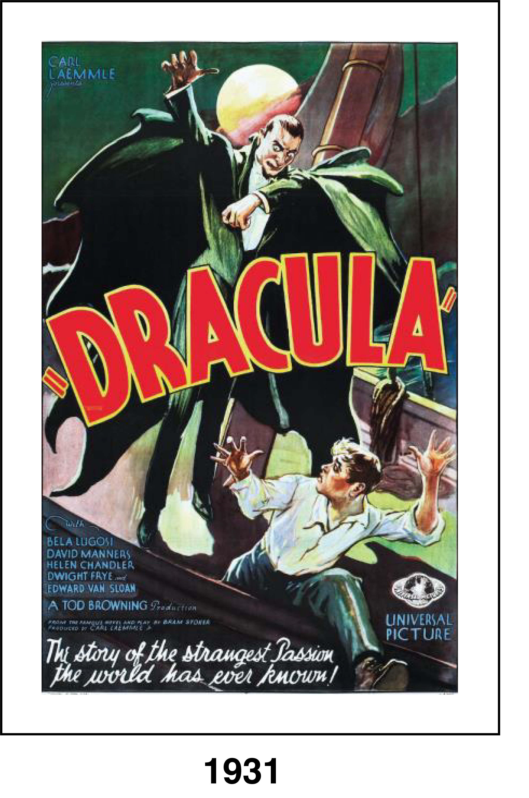
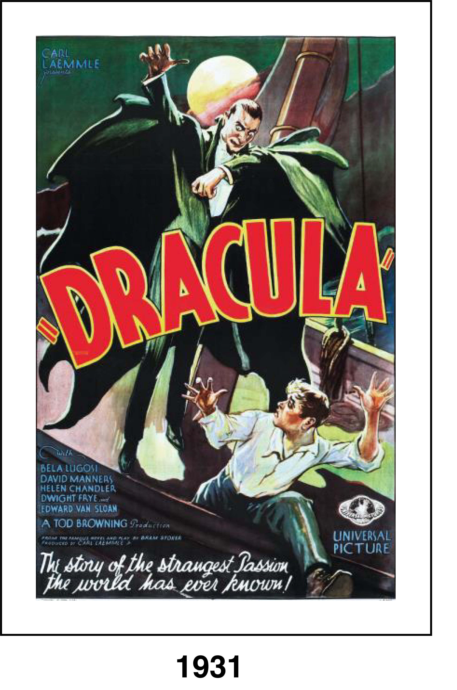

The dashing, mysterious Count Dracula (Bela Lugosi), after hypnotizing a British soldier, Renfield (Dwight Frye), into his mindless slave, travels to London and takes up residence in an old castle. Soon Dracula begins to wreak havoc, sucking the blood of young women and turning them into vampires. When he sets his sights on Mina (Helen Chandler), the daughter of a prominent doctor, vampire-hunter Van Helsing (Edward Van Sloan) is enlisted to put a stop to the count's never-ending bloodlust.